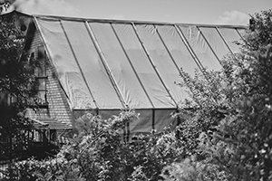
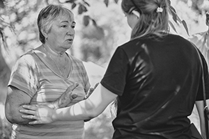
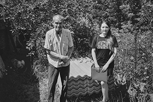
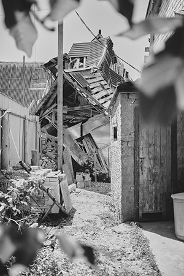

своєму будинку.
своєму будинку.ВО «Вдома» з’явилось в травні 2022 року, аби допомогти тим родинам з селищ та міст Київської області, які втратили домівки через війну, налагодити побут.
Волонтерське об’єднання «Вдома» з’явилось в травні 2022 року, аби допомогти тим родинам з селищ та міст Київської області, які втратили домівки через війну, налагодити побут. З того часу ми облаштовуємо побут людям, чиї будинки були зруйновані через окупацію. Відбудовуємо Україну разом!

Волонтерське об’єднання «Вдома» з’явилось в травні 2022 року, аби допомогти тим родинам з селищ та міст Київської області, які втратили домівки через війну, налагодити побут. З того часу ми облаштовуємо побут людям, чиї будинки були зруйновані через окупацію. Відбудовуємо Україну разом!
Засновниками і членами команди на волонтерських засадах є Сліпець Анастасія, Сліпець Юрій та Таранцова Юлія. Пізніше до команди доєдналися Полінкова Анастасія, Аліна Ільченко.
допомагаємо
адресно
Постраждалі завжди потребують допомоги, ми в свою чергу намагаємося зробити все, що в наших силах. Важко зробити все самотужки або за власні кошти, тому наша команда буде вдячна за будь-яку допомогу.
Якщо ви бажаєте допомогти постраждалим, ви завжди можете зробити донат. Якщо у вас немає можливості зробити донат, але є бажання допомогти, напишіть нам і розкажіть чим можете допомогти.


 Окремим напрямком є
співпраця з волонтерами, які їздять у Харківську
Окремим напрямком є
співпраця з волонтерами, які їздять у Харківську та
Донецьку області, підтримка ВПО.
Де почуваєшся у безпеці, там де затишок. Там де хтось зустрічає перше кохання, а хтось проводжає останнє. Важкі татові сльози чи грубе мамине слово за яке потім буде соромно. Там де хтось став батьками, а хтось втратив своїх.
Війна змусила нас усіх переосмислити, що таке дім.


- 
- 
- 


- 
Візія → відновлені будинки, налагоджений побут та закриті базові потреби тих родин, які до нас звернулись.
Цінності → кожна людина варта найкращого, тому допомагаємо так і тим, як робили б для себе. Вислухати, підтримати, дати надію, показати, що ти не один.